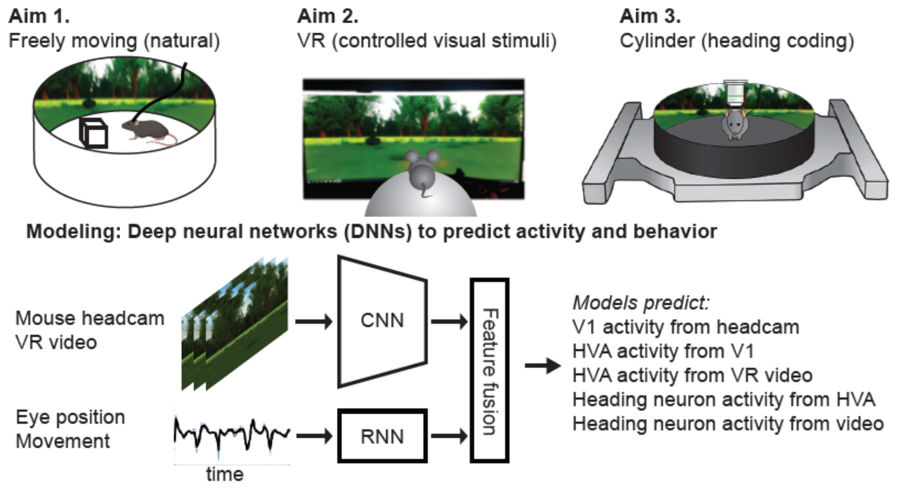

We introduce a multimodal recurrent neural network that integrates gaze-contingent visual input with behavioral and temporal dynamics to explain V1 activity in freely moving mice.
Cortical Visual Processing for Navigation
How does cortical circuitry perform the visual scene analysis needed to support navigation through the environment?
Most studies of central visual processing are focused on detection or discrimination of specific features of simple artificial stimuli (e.g., orientation, direction of motion, object identity). However, navigation through the environment involves a very different set of computational goals, such as identifying landmarks and using optic flow to avoid obstacles. Furthermore, these computations occur under a very different stimulus regime, with the animal actively sampling a complex and continually moving sensory scene.
Our goal is to determine how the brain extracts relevant visual features from the rich, dynamic visual input that typifies active exploration, and develop (deep) predictive models of brain activity based on visual input and several behavioral variables. The data includes one-of-a-kind measures of neural activity in mice navigating through real-world and virtual environments, collected using 2-photon imaging and electrophysiology by our collaborators Spencer Smith, Michael Goard, and Cris Niell.
The results of this project will provide knowledge about normal visual function and insights for treating impaired vision via prosthetic or assistive devices.

Project Leads:
PhD Candidate
PhD Student
Principal Investigators:
Assistant Professor
Assistant Professor
Associate Professor
University of Oregon
Associate Professor
Consultant:
Associate Professor
University of Washington
R01NS121919:
Cortical visual processing for navigation
PI: Spencer Smith (UCSB)
April 2021 - March 2024
National Institute of Neurological Disorders and Stroke (NINDS)
National Institutes of Health (NIH)
Publications
Multimodal deep learning model unveils behavioral dynamics of V1 activity in freely moving mice
Aiwen Xu, Yuchen Hou, Cristopher M. Niell, Michael Beyeler 37th Conference on Neural Information Processing Systems (NeurIPS) ‘23

Cortical motion perception emerges from dimensionality reduction with evolved spike-timing dependent plasticity rules
We developed a spiking neural network model that showed MSTd-like response properties can emerge from evolving spike-timing dependent plasticity with homeostatic synaptic scaling (STDP-H) parameters of the connections between area MT and MSTd.
Kexin Chen, Michael Beyeler, Jeffrey L. Krichmar Journal of Neuroscience

3D visual response properties of MSTd emerge from an efficient, sparse population code
Using a dimensionality reduction technique known as non-negative matrix factorization, we found that a variety of medial superior temporal (MSTd) neural response properties could be derived from MT-like input features. The responses that emerge from this technique, such as 3D translation and rotation selectivity, spiral tuning, and heading …
Michael Beyeler, Nikil Dutt, Jeffrey L. Krichmar Journal of Neuroscience 36(32): 8399-8415

A GPU-accelerated cortical neural network model for visually guided robot navigation
We present a cortical neural network model for visually guided navigation that has been embodied on a physical robot exploring a real-world environment. The model includes a rate based motion energy model for area V1, and a spiking neural network model for cortical area MT. The model generates a cortical representation of optic flow, determines the …
Michael Beyeler, Nicolas Oros, Nikil Dutt, Jeffrey L. Krichmar Neural Networks 72: 75-87

Efficient spiking neural network model of pattern motion selectivity in visual cortex
We present a two-stage model of visual area MT that we believe to be the first large-scale spiking network to demonstrate pattern direction selectivity. In this model, component-direction-selective (CDS) cells in MT linearly combine inputs from V1 cells that have spatiotemporal receptive fields according to the motion energy model of Simoncelli and …
Michael Beyeler, Micah Richert, Nikil Dutt, Jeffrey L. Krichmar Neuroinform 12(3):435-454